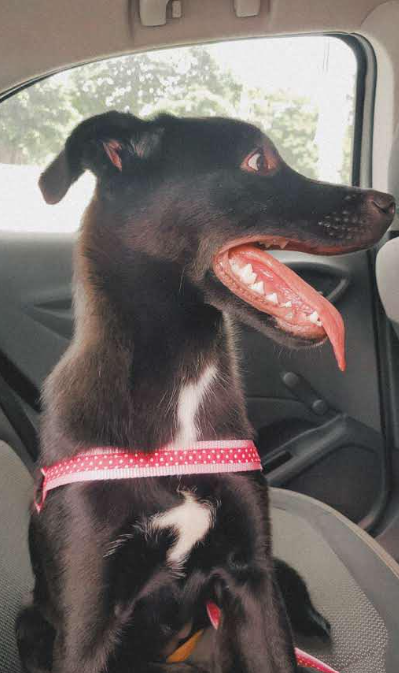

Sobre mim...

Sou a Raissa, tenho 16 anos, nasci no dia 15 de dezembro de 2008 e sou católica.
Gosto muito de sair de casa, principalmente para ir ao parque, ou ir ao shopping, gosto de estudar também, amo sociologia e história, elas são minhas matérias preferidas na escola. Amo moda e amo ver como ela se transforma através da história, a arte de expressar aquilo que está acontecendo através de roupas, é genial!
Enfim, também amo ir comer lanche com meus amigos aos sábados à noite e tomar sorvete no frio.
Amo escutar música, de todos os tipos e em todos os momentos (seja lendo, estudando, me arrumando para sair, fazendo comida, limpando a casa, ou até escutar por escutar mesmo), cada mês é um estilo musical diferente kkkkk, me considero bem eclética em referência à isso.
Além disso, com certeza passaria horas em uma livraria ou uma biblioteca, apenas admirando o local e lendo um livro conforto. A leitura me faz relaxar, de retirar de um mundo caótico e simplesmente me transportar para um mundo onde só existe dentro dos livros. Por fim, meu comportamento é muito agitado, fazendo com que eu seja uma pgarota bem expressiva, tanto na fala, quanto nas expressões físicas, particularmente falando, sou uma pessoa díficil, até porque, gosto de fazer as coisas sempre do jeito certo e nem sempre tenho paciência, mas estou trabalhando nisso...
Minha família

Estes na foto acima, são meus pais
Minha mãe se chama Rosângela, ela tem 43 anos e tem 2 irmãs mais novas. Ela é daqui de Sumaré mesmo, mas os pais dela (meus avós) são do Nordeste, mais especificamente do interior do Piauí
Já o meu pai se chama Adeildo (sim, é um nome estranho mesmo), ele tem 45 anos e tem 11 irmãos! Ele é de um estado do Nordeste também, mas diferente da família da minha mãe, ele é de Alagoas, uma curiosidade sobre a cidade que meu pai nasceu: União dos Palmares é a cidade onde Zumbi dos Palmares viveu e foi morto.
Além dos meus pais e eu, temos mais uma habitante na nossa casa. O nome dela é Lua!

A Lua é uma pequena cachorra que em pé fica do meu tamanho (eu tenho 1,60 de altura 😁). Ela é uma mistura das raças Labrador e Rottweiler, fazem 2 anos e 1 mês que ela chegou em casa.
O nome dela é uma homenagem para a Lua mesmo, pois sou A-PAI-XO-NA-DA por ela. Bom, gosto de chamá-la de potrinha, pois quando está correndo, parece que ela está dando pequenos galopes, que nem um potrinho quando está aprendendo a andar.
Meu melhor amigo...

Esse é o Miguel. Ele é o meu melhor amigo (e também meu namorado 😊). Ele tem 18 anos e é filho único. Conheci ele na igreja faz 8 meses que nós namoramos, o mais engraçado é que nós começamos a namorar 1 dia antes do meu aniversário, (e particularmente, foi um baita presente de aniversário). O motivo do título "Meu melhor amigo..." é pelo fato de ele realmente ser o meu melhor amigo, me chamando atenção quando precisa, me encorajando, me apoiando e sendo até meu psicólogo nas horas vagas kkkkk.